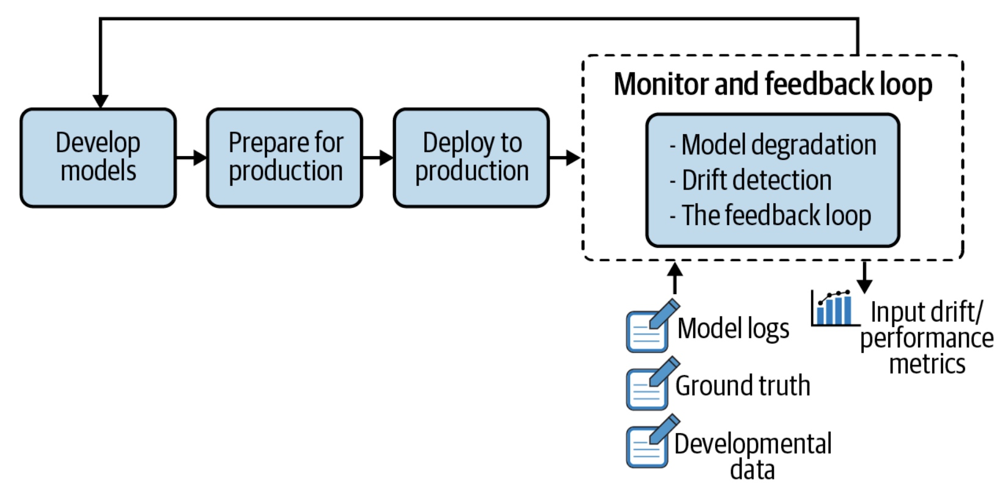
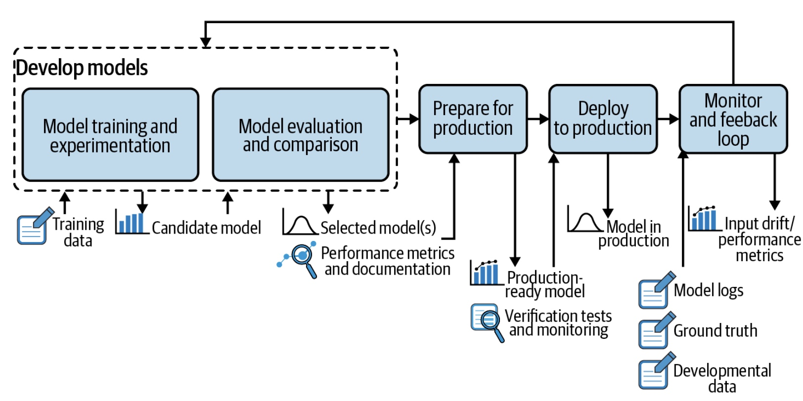

前言
当机器学习模型部署在生产环境之后，它可能会在毫无预兆的情况下，业务指标快速下降，直到为时已晚。这就是为什么模型监控是机器学习模型生命周期中的关键步骤，也是MLOps的关键部分:

机器学习模型需要在两个方面进行监控:
- 资源类监控：确保模型在生产环境中正确运行，具体包括：系统是否仍是监控？ CPU、RAM、网络和磁盘空间是否符合预期？请求是否以预期的RT处理等
- 指标类监控：随着时间的推移，模型是否依然有效。包括：模型是否仍适配新进的线上数据？指标是否与设计阶段一样好？
资源类监控是DevOps中所涉及到的。而指标类监控更复杂，模型的指标表现通常依赖于其数据， 由于数据通常在不断变化，如果没有持续的新数据来训练模型，不再更新的模型无法学习到新的数据模式。模型指标类监控试图跟踪这种衰减，并且在适当的时候，使用更具代表性的新数据对模型进行再训练，阻止模型指标的衰减。
模型应该多久重新训练一次？
关于监控和再训练的其中一个关键问题是：模型应该多久再训练？这个问题取决于许多因素，包括：
- 业务领域：网络安全、股票实时交易等领域的模型需要定期更新，以适应这些领域的即时变化。而如语音识别这类模型，通常更稳定，模式不会经常突然改变。但是，更稳定的模型需要更加强大：比如需要支持咳嗽场景下语音识别；
- 再训练成本：需要考虑再训练的成本是否值得。例如，整个数据管道并重新训练模型需要一周的时间，但是仅能提升1%或者更低；
- 模型指标：在某些情况下，模型指标在很少新的训练样本下很难有提升，是否重训练的还取决于收集足够的新训练样本；
在再训练频率方面，还需要考虑两个极限情况：
- 上限：模型每年重训练一次， 但是要确保你的团队以及你的基础设施能够保证训练的时候，团队和基础设施能够有用；
- 下限：以具有近乎实时反馈的模型为例，例如推荐引擎，用户在预测后几秒钟内点击产品，相关部署方案应该包括A/B Test，以确保模型按预期执行，考虑到这些验证属于统计验证，需要时间来处理收集所需的信息，计算相关的验证指标，另外即使是最简单的部署，该过程也可能允许一些人工验证或手动回滚的可能性。这些决定再训练的下限；
除上，还有一个规则之外的，就是”在线训练“：团队通过使用更自动化的ML管道，来构建能自我迭代的业务训练能力。虽然听起来很有吸引力，但这些算法的上线成本更高：模型设计者不仅要在测试数据集上测试模型的指标，还要在数据变化时验证模型的指标。 （后者是必需的，因为一旦部署了算法，就很难减轻不良学习的影响，而且当每次训练递归地依赖于前一次训练时，也不可能重现所有行为，因为你不可能让用户行为无法重复发生）。
没有标准的方法——类似于交叉验证来做模型验证，所以设计成本会更高。在线机器学习是挑战性很高的一个分支， 需要强大的基建与标准化的流程才能保证。
无论如何，一定频率的模型再训练绝对是必要的——这不是是否的问题，而是合适在训练的问题。好消息是，如果有可能在第一次模型训练时，收集到足够多的训练数据，那么大多数场景下，使用新的数据来进行再训练的解决方案是合适的。
因此，作为 MLOps和算法模型生命周期的一部分，机器学习各方参与者应该尽可能全面理解模型指标衰减。实际上，每个部署的模型都应该带有监控指标和相应的警告阈值，以尽快检测到业务性能下降。接下来的文章，用于在特定模型下，如何定义指标理解模型衰减。
理解模型退化
一旦机器学习模型在生产中得到训练和部署，有两种方法可以监控其性能下降：真实数据评估和输入漂移检测。了解这些方法背后的理论和局限性对于确定最佳策略至关重要。
真实数据评估
真实数据再训练依赖训练数据标签。例如，在欺诈检测模型中，训练数据标签是特定交易是否是欺诈性的。对于推荐引擎，则是客户是否点击或最终购买了推荐产品。
收集到新的训练数据标签后，下一步是根据训练样本数据评估模型的指标，并将其与训练阶段的模型指标进行比较，当差异超过阈值时，模型可以被认为是过时的，应该重新训练。
需要监控的指标通常有两种：
- 统计类指标，如准确度、AUC、logloss 等。由于模型设计者可能已经选择了其中一个指标来选择最佳模型，因此它是监控的首选候选者。对于更复杂的模型，整体指标不够，可能需关注由子群体计算的指；
- 业务指标，例如成本效益评估。 例如，信用评分业务已经制定了自己的特定指标；
统计类指标的优势是它与领域无关。为了获得最早的有意义的警告，甚至可以计算p值来评估观察到的下降不是由于随机波动引起。 而缺点是其指标下降可能在统计上显着而在业务层面没有任何明显的影响，或者更糟的是，再训练的成本与再部署相关的风险可能高于预期收益。 而业务指标更有用，它们通常具有商业价值，能够帮助业务人员在模型指标与再训练的成本上平衡。
如果可能的话，真实样本数据评估是最好的解决方案。 但是通常存在三个主要挑战：
- 真实样本数据并不总是立即可用。对于某些业务场景，团队需要等待数月（或更长时间）才能获得真实的样本数据，如果模型指标训练下降，这可能意味着重大的经济损失；
- 真实样本数据和样本标签是分离的。为了计算已部署模型在新的样本数据上的指标，需要样本数据与其对应的样本标签匹配。在生产环境中，这是一项具有挑战性的任务，这两条数据是在不同的系统中以不同的时间戳生成和存储的。对于低成本或短期模型，可能不值得自动收集真实数据与样本，并相互关联，这带来的成本提升，可能无法被模型指标带来的增益所cover；
- 真实样本数据与标签仅部分可用。 在某些情况下，为所有算法场景过滤出可用的样本数据与标签，成本极大。比如，在推荐场景中， 这意味着选择要标记哪些样本是真实被用户观察过并且被用户选择或者未选择，这其中的困难将偏差引入系统;
无论如何， 进入模型再训练的真实样本子集需尽可能涵盖所有可能的情况，以便经过训练的模型无论后续样本如何都能做出符合预期的预测；
输入漂移检测
鉴于真实数据评估的成本以及局限性，一种更实用的方法是对样本输入进行漂移检测。
假设一种业务场景， 其目标是使用UCI葡萄酒质量数据集作为训练数据来预测波尔多葡萄酒的质量。
每种葡萄酒都有以下特征：类型、固定酸度、挥发性酸度、柠檬酸、残糖、氯化物、游离二氧化硫、总二氧化硫、密度、pH、硫酸盐和酒精度。为了简化建模问题，假设质量分数等于或大于 7 的葡萄酒是好酒。因此，目标是建立一个二元模型，从葡萄酒的属性中预测该标签。
为了演示数据漂移，我们明确地将原始数据集分成两部分：
- wine_alcohol_above_11，其中包含所有酒精度为11% 及以上的葡萄酒;
- wine_alcohol_below_11，包含所有酒精度低于11% 的葡萄酒;
我们通过酒精度数超过11%来训练和评估我们的模型，低于11%数据将被视为部署模型的新的传入数据。
这样的处理方式人为地制造了一个大问题：葡萄酒的质量不太可能独立于酒精度数。更糟糕的是，酒精含量可能与两个数据集中的其他特征有不同的相关性。所以，在超过11%的数据集上学到的模型能力（“如果残糖低且 pH 值高，那么葡萄酒好酒的概率就高”）可能在另一个数据集上完全是错误的。
从数学上讲，不能假设每个数据集的样本来自相同的分布（即它们不是“相同分布的”）。而确保算法模型能取得预期效果的前提是：独立同分布，即要求训练与部署后接触的真实数据数据分布尽可能一致。而这里我们在第一个数据集上训练模型，然后在第二个数据集上部署它， 由此产生的偏移称为数据漂移。如果酒精水平是 ML 模型使用的特征之一(或者与模型使用的特征强相关)，则称为特征漂移，而模型训练学习的模式本身不再成立时，则成为概念漂移。
真实场景的漂移检测
如前文描述，为了能够及时做出反应，模型行为可仅基于输入数据的特征值进行监控，而无需等待真实样本数据与标签。
其正常逻辑是，如果数据分布（例如，均值、标准差、特征之间的相关性）在模型训练和验证阶段与真实部署场景所面对的数据之间存在差异，则表明模型的指标在这两种场景下是不可能相同的。
产生数据漂移的原因示例
数据漂移有两个常见的根本原因：
- 样本选择偏差，其中训练样本不能代表总体样本。选择偏差通常源于数据收集管道本身，在葡萄酒示例中，酒精含量高于11%的原始数据集样本无法代表整个葡萄酒群体。请注意，这种原因在现实生活中说起来容易做起来难，因为有问题的通常是未知的、与场景相关、并且被检测的；
- 非稳定环境，其中从数据源收集的训练数据不代表目标源。这通常发生在具有强烈季节性影响的时间相关任务。回到葡萄酒的例子：可以想象这样一种情况，原始数据集样本只包括特定年份的葡萄酒，这可能代表一个特别好的（或坏的）年份，在这些数据上训练的模型可能无法推广到其他年份；
输入漂移检测技术
在理解可能导致不同类型漂移的可能情况之后，接下来 的问题是：如何检测漂移？ 本节介绍两种常见的方法，如何选择取决于对可解释性的需求：需要对结果进行解释的方法的情况应该更偏向单变量统计测试，而如果同时涉及多个特征的复杂漂移，或者如果数据科学家可以忍受黑盒，那么域分类器方法也可能是一个不错的选择：
单变量统计检验
此方法需要对来自每个特征的源分布和目标分布的数据进行统计。当这些评估存在严重偏差时，则说明存在较为严重的输入漂移。
假设检验在学术界进行了广泛研究，但基本方法依赖于这两个检验：
- 对于连续特征，Kolmogorov-Smirnov检验是一种非参数假设检验，用于检查两个样本是否来自同一分布；
- 对于离散类特征，卡方检验是一种实用的选择，用于检查目标数据中离散特征数据分布是否与源数据数据分布相匹配;
通常会尝试使用p值来辅助进行漂移检测， p值的主要优点是它们有助于尽快检测漂移，主要缺点是没有量化效果的能力。因此，在真实场景下，有必要用具有业务意义的指标来补充p 值。
领域分类器
这类方法和最近比较火的对抗式的方法比较类似：训练模型，该模型试图区分原始数据集（输入特征和可选的预测目标）和开发数据集。换句话说，他们堆叠两个数据集并训练一个旨在预测数据来源的分类器。将模型的指标（例如其准确性）视为漂移水平的指标。如果该模型在其任务中是成功的，则具有较高的漂移分数，意味着可以区分训练时的数据和真实模型面对新数据，因此可以说新数据已经漂移。而为了获得更多信息，特别是要识别导致漂移的特征，可以使用该模型的特征重要性分数。
结果解释
领域分类器和单变量统计测试都指出了特征或标签对解释漂移的重要性。 归因于标签的漂移很重要，因为它通常直接影响业务。例如，考虑信用评分：如果整体评分较低，授予贷款的数量可能会较低，因此收入也会较低。）而归因于特征的漂移通常有助于减缓漂移的影响：
- 根据此特征重新加权（例如，如果 60 岁以上的客户现在代表 60% 的用户，但在训练集中仅占 30%，则将其权重加倍并重新训练模型）;
- 删除该特征并在没有它的情况下训练一个新模型;
在几乎所有场景下，即使检测到漂移，也不太可能存在自动操作。 如果部署再训练模型的成本很高，则仅当基于真实场景的指标下降或检测到显著漂移时，才会根据新的样本数据对模型进行再训练。
数据反馈
来自生产环境的数据需要流回模型原型环境进行进一步改进。
从下图可以看出，在监控和反馈中收集的数据被发送到模型开发阶段。相关系统分析模型是否按预期工作：如果是，则无需执行任何操作，如果模型的指标下降，则将自动或手动触发更新。 在实际场景中，要么使用新的样本数据重新训练模型，要么开发更强大的新模型。

无论哪种情况，数据监控与反馈系统的核心是能够捕捉即时的数据模式，并确保业务不会受到负面影响。 该系统的基础架构由三个主要组件组成，对构建强大MLOps能力至关重要：
- 从多个生产服务器收集数据的日志系统；
- 在不同模型版本之间进行版本控制、模型评估的模型评估系统；
- 在线网环境中进行模型比较的在线系统，可以使用影子评分系统（冠军/挑战者）或A/B 测试；
日志系统
如今，随着生产基础设施变得越来越复杂，多场景、多版本、多数据源的模型同时部署在多个服务器上，有效的日志系统比以往任何时候都更加重要：
来自这些真实线网环境下的数据需要集中进行分析和监控，使得机器学习系统的持续改进成为可能，机器学习系统的事件日志是带有时间戳和以下信息的记录。
- 模型元数据：型号和版本的标识；
- 模型输入：新数据的特征值，可被用来判断新传入数据是否是模型所期望的，从而允许检测数据漂移；
- 模型输出：模型的预测，连同后来收集的样本数据与标签，能够帮助计算模型在线网环境中的真实指标；
- 系统动作：模型预测几乎不会是机器学习相关应用的最终产品，更常见的情况是系统会根据这个预测进行下一步操作。例如，在欺诈检测用例中，当模型给出高概率时，系统可以阻止交易或向银行发送警告。这类信息很重要，因为它会影响用户反应，从而间接影响反馈数据；
- 模型解释： 在金融、医疗、自动驾驶等一些高度监管的领域，模型预测必须带有解释（即哪些特征对预测影响最大），此类信息通常使用Shapley等技术进行计算，并应记录下来以识别模型是否存在潜在问题（例如，偏差、过度拟合）；
模型评估
一旦日志系统到位，它会定期从生产环境中获取数据以进行持续监控。直到有一天数据漂移警报被触发：传入的数据分布正在偏离训练数据分布，模型指标可能正在下降。
经过审查，算法同学通过重新训练模型来改进模型：对于几个经过训练的候选模型，下一步是将它们与部署的模型进行比较。 在实践中，这意味着在同一数据集上评估所有模型（候选模型集和部署模型）。如果其中一个候选模型的离线指标优于已部署的模型，则可以在生产环境中更新模型，通过冠军/挑战者或 A/B Test设置进行在线评估，这就是模型评估系统， 它允许算法同学进行以下操作：
- 将多个新训练的模型版本与现有部署的版本进行比较；
- 将模型与样本数据上的其他模型版本进行比较；
- 随时间跟踪模型指标；
机器学习优化范式
构建机器学习相关应用程序是一个长期的迭代过程，从部署到生产、监控性能以及寻找改进系统如何解决目标问题的方法。迭代优化的方法有很多，包括：
- 在新数据上重新训练相同的模型；
- 向模型添加新特征；
- 开发新算法模型；
由于这些原因，机器学习场景随着时间不断变化。需要有一套成熟的机器学习优化的方法论来对机器学习业务进行优化， 这里称之为机器学习优化范式。
机器学习优化范式与以往我们解决其他软件任务的模式不同：让我们回到前面介绍的 wine 示例：部署三个月后，存在酒精含量较低的葡萄酒的新数据流入系统后，我们可以在新数据上重新训练我们的模型，从而使用相同的模型获得新的模型版本，也可能创建新的数据特征来添加到模型中，或者我们可能决定使用另一种机器学习模型（如深度学习模型）而不是 XGBoost。
因此，该模型的机器学习优化范式： - 线上模型不做任何修改；
- 基于原始模型模板、新数据重新训练；
- 使用新机器学习模型并且联合新数据进行训练；
模型评估存储系统
提醒一下，模型评估存储系统是集中管理模型生命周期相关的数据， 这些数据是允许被比较的。模型评估存储系统的两个主要任务是：
- 随着时间的推移对按机器学习优化范式的优化行为进行版本控制：每个记录版本都必须附带其训练阶段的所有基本信息，包括：
- 使用的所有特征；
- 每个特征的预处理技术；
- 使用的算法以及选择的超参数；
- 训练数据集；
- 用于评估训练模型的测试数据集；
- 评估指标；
- 比较机器学习优化范式重产生的不同版本之间的指标， 要决定部署哪个版本，必须在同样数据集上评估所有的这些版本（候选者和部署的模型）。
选择要评估的数据集至关重要：如果有足够多的真实场景数据可以对模型指标进行可靠估计，因为它最接近我们在生产环境中数据；否则，我们可以使用部署模型的原始验证数据集，在数据没有漂移假设下，这让我们对候选模型与原始模型相比的指标有具体的了解。
确定最佳候选模型后，工作尚未完成，在实际场景中，模型的离线和线网指标通常存在很大差异，因此，线网环境的测试至关重要， 线网环境的评估给出了关于候选模型在面对真实数据时的行为的最真实的反馈。
线网评估
从业务角度来看，生产模型的线网评估至关重要，而技术角度来看可能具有挑战性，在线评价主要有两种模式
- 冠军/挑战者（也称为旁路测试），其中候选模型旁路部署并对相同的实时请求进行打分；
- A/B测试，其中候选模型对线网部分实时请求进行打分，已部署的模型对其他请求进行评分
这两种情况都需要真实数据反馈，因此，线网评估结果具有滞后性。
冠军/挑战者测试
冠军/挑战者（旁路测试）涉及将一个或多个候选模型（挑战者）部署到线网环境，候选模型接受与已部署模型（冠军）相同的请求。但是，它们不会向系统返回任何响应或预测结果。只需记录预测打分以供进一步分析。
冠军/挑战者测试被用来做两件事：
- 验证候选模型的指标优于或至少与已部署模型一样好。因为这两个模型是在相同的数据上打分的，因此可以直接比较它们在线网环境的指标。当然，这也可以通过使用由冠军模型打分的新请求组成的数据集， 在候选模型来离线打分完成；
- 测量候选模型如何处理线网实际负载（如rt、cpu使用率）。考虑到新模型可能有新的特征、新的数据预处理逻辑，甚至是新的模型结构，请求的预测时间不会和已部署模型一样，是否符合能上线的要求也是需要验证的；
A/B测试
A/B 测试（测试两个变体 A 和 B 的随机实验）是软件应用优化中广泛使用的技术：
- 对于类似推荐场景的应用，模型给出了给定客户可能会点击的item列表。因此，如果商品没有出现，就不可能知道客户是否会点击。在这种情况下，进行A/B测试，其中一些客户会看到模型A的推荐，而一些客户会看到模型B的推荐；
- 优化的目标仅与预测的指标间接相关：如广告引擎，它可以预测用户是否会点击广告，假设它是根据购买率来评估的，即用户是否购买了产品或服务，而每一次，不可能记录用户对两种不同模型的反应；